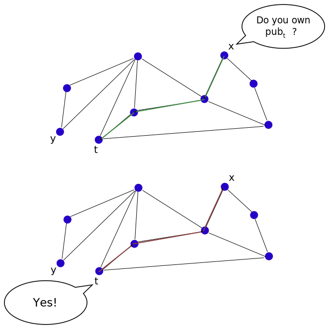

Articles
The Distributed Post Office: Instant hierarchy for mesh networks
by realAbstract
We introduce the Distributed Post Office, an idea for routing messages in a decentralized mesh network. The Distributed Post Office is a method for creating an instant hierarchical structure from a mesh network.
We describe the basic form of the Distributed Post Office, and mention two improvements to its structure.
Next, we run some experiments [github]. Our results show that the Distributed Post Office in its current form does not scale well as a solution for routing messages in large networks.
In this text we do not discuss security or reliability topics related to the Distributed Post office.
The distributed post office question
What if there there were no post offices in the world, and you wanted to send a package to some far friend?
Assume that you meet some people you trust on a regular basis. More generally, assume that every person \(x\) in the world meets a few people he trusts on a regular basis. We also call those trusted regulars of \(x\) the neighbours of \(x\). If \(y\) is a neighbour of \(x\), we also say that \(x\) is a neighbour of \(y\). The neighbours relationships could be used to transfer packages.
For the feasibility of things, let's also add in the assumption that this system is connected. This means: We can get from any person to any other person using a sequence of neighbours. Or, in other words: If we draw a graph of all the people in the world (As nodes), and put edges between every person and his neighbours, then we get a connected graph.
Would these assumptions be enough to let us send a message to anyone in the world?
A few initial thoughts:
-
Person \(a\) can send a package to person \(B\) only if there is a "path" of neighbours between \(a\) and \(b\). That means: \(a\) has some neighbour \(a_1\), and \(a_1\) has some neighbour \(a_2\) and so on, until finally some \(a_k\) has \(b\) as a neighbour.
-
The lack of any centralized post office might create the urge to create one. This artificial post office might be some person that everyone knows. However, picking such a person that is agreed upon all the participants might be difficult task.
-
What kind of addressing are we going to use for sending packages, if there is no central post office? (What are we going to write on the package on the "TO" field?) And what if the network layout changes? Will the address remain valid?
Basic Distributed Post office
Finding the highest person
One way to solve this is finding some special person. This person will be used as a reference point for sending messages. All our messages will pass through this person. This centralized point of view is a bit different from our usual decentralized point of view, but it will present some idea that we might later be able to utilize in a decentralized way, so bear with me here.
Finding a special person could be achieved as follows: Every person \(x\) will maintain a link (Maybe through a few neighbours) to the highest person he knows of (We assume that there are no two people of the exact same height). By maintaining a link we mean that \(x\) will remember some person \(y\), his height and a path from \(x\) to \(y\) that goes through neighbours.
Initially, every person \(x\) will look at his neighbours (And himself), and find the highest person among them. Then \(x\) will inform all his neighbours of the highest person he knows (He will also send his path to that person). Next, \(x\) will look at all the highest known people he received from his neighbours. He will update his highest known person accordingly.
The algorithm could be described simply as follows: In every iteration, every person \(x\) sends to all his neighbours the highest person \(y\) that he knows, and also the shortest path he knows from \(x\) to \(y\). (Iteration could happen every few seconds, for example).
After enough iterations, we expect that every person \(x\) will find the highest person in the world \(t\). In addition, \(x\) will know a shortest path possible from \(x\) to \(t\).
Let's explain this result: Why do we expect that the highest person \(t\) will always be found by all people, and also that a shortest path will be found?
Assume that \(x\) is some person, and \(t\) is the highest person in the world. There is some shortest path of neighbours between \(x\) and \(t\) (However \(x\) doesn't know that path yet). Let's assume that this path of neighbours have the people: \((x,x_1,x_2,\dots,x_{k-1},x_k,t)\) in this order.
After the first iteration, \(x_k\) will have \(t\) as the highest person in the world. \(x_k\) will also have a shortest path to \(t\). In the next iteration, \(x_{k-1}\) will know \(t\) as the highest person in the world (Because \(x_k\) has told him about it). \(x_{k-1}\) will also know a shortest path to \(t\): The path: \((x_{k-1},x_{k},t)\). What if this is not the shortest path? Then there must be some path of length two, as follows: \(x_{k-1},t\). In that case, there is also a shorter path between \(x\) and \(t\): \((x,x_1,x_2,\dots,x_{k-1},t)\). But this will contradict our assumption that \(x,x_1,x_2,\dots,x_{k-1},x_k\) is a shortest path between \(x\) and \(t\).
We can continue this argument until we get to \(x\). (The formal way to do it is using mathematical induction). Then we conclude that after \(k+1\) iterations, \(x\) will have \(t\) as the highest person in the world, and \(x\) will also have a shortest path from \(x\) to \(t\).
Another way to think about it is that the amount of iterations needed until every person finds the highest person in the world is not more than the diameter of the neighbours graph.
We don't really deal with security here, but I want to mention this question: Whenever a person sends to all his neighbours the highest person he knows, how can we know he doesn't lie? We will deal with this later.
Addressing and Drift
So far we got some special person \(t\) that every person can reach: Every person \(x\) knows a path to \(t\), and thus \(x\) can send a package to \(t\).
How could \(x\) send a message to some arbitrary person \(y\)? \(x\) already knows the path from \(x\) to \(t\). If \(x\) knew a path from \(t\) to \(y\), he could first deliver his package to \(t\), and then ask \(t\) to send his package to \(y\).
This idea leads us to choose the address of an arbitrary node \(y\) as a shortest path between \(t\) and \(y\). (This is the reversed path between \(y\) and \(t\)). We will mark this as the address of \(y\), or \(A(y)\).
Given \(A(y)\), \(x\) can send a package to \(y\) by sending the package first to \(t\), with the address \(A(y)\) written on the package. \(t\) will then use the path \(A(y)\) to deliver the message all the way to \(y\).
We ignore the centrality issues of this idea for a moment (\(y\) has to deal with all the packages sent in the world!!!), and try to think about the addressing idea.
\(y\)'s address is induced from the structure of the network of neighbours. Certain changes could invalidate \(y\)'s address. In other words: There is a drift in the addresses, as the network of neighbours changes.
One way to deal with this issue is to refresh the addresses from time to time: If \(x\) is in contact with \(y\), then \(y\) will send his current address to \(x\) every few seconds. \(x\) will also send his current address to \(y\) every few seconds. This might not be very reliable, but it's an idea.
Changing people into nodes
Formally we solved the problem of delivering packages, however the solution is not very satisfying. All the packages has to go through some special person. This is not good for us because of security reasons (Could we trust the special person), and also because of load issues (Just because he is the highest person in the world, he has to deal with all the packages?)
Before we start proposing more ideas, it is probably a good time to change our terminology to networks and nodes. We get the following question: Assume that we are given a mesh network, where every node has a few neighbours. How can we deliver messages between every two arbitrary nodes?
Note that we already tried to solve this question using flooding, \(sqrt{n}\) routing and Virtual DHT routing.
Instead of checking the height of people, we can use some other properties of nodes. We will use some public key cryptography. Every node \(y\) will create a key pair \(prv_x,pub_x\) (Private and Public). We assume that every node \(x\) knows the public keys of all his neighbours.
Next, we choose some cryptographic hash function \(h\). Instead of person \(x\)'s height, we will take a look at \(h(pub_x)\). We will call this value \(x\)'s height. The highest person in the world will turn into the node \(t\) that maximizes the value \(h(pub_t)\). In that case we will also say that \(t\) is the "highest" node in the network with respect to the cryptographic hash function \(h\).
While it was difficult to verify the height of a person from a distance, we could verify the public key of a node from a distance. If node \(x\) is informed by node \(y\) about some remote node \(t\) that has a certain \(h(pub_t)\) value, \(x\) can verify it himself. \(x\) can send some challenge all the way to \(t\), and \(t\) will send back a response that proves he owns the public key \(pub_t\).

Note however that this challenge response idea is not a magic cure to all the security problems in this model. It just helps a bit.
Adding hierarchy
Highest node in some radius
One approach to make things better is to create some kind of hierarchy. Earlier, every node \(x\) maintained contact to the "highest" node in the network (with respect to some cryptographic hash function \(h\)) through some path of nodes.
This time, instead of remembering just the "highest" node in the network, every node \(x\) will remember a few special nodes. Every node will be the "highest" in some certain area around \(x\):
- \(t_x^1\): The "highest" node of maximum distance \(1\).
- \(t_x^2\): The "highest" node of maximum distance \(2\).
- \(t_x^3\): The "highest" node of maximum distance \(3\).
...
- \(t_x^d\) The "highest" node in the network.
We mark by \(t_x^j\) The "highest" node of maximum distance \(j\) from \(x\). In our example, \(t_x^3 = t_x^4\).
Side question: How can we choose a good value for \(d\)? One suggestion is to keep increasing the distance until we stop getting new highest nodes. Another suggestion would be to just assume that the graph diameter won't be more than some constant number.
First let's assume that somehow we managed to have the above information for every node in the network, and see what we can do with it. (Note that we didn't yet describe how to get this information. It will be described soon later).
We define \(x\)'s address to be \(A(x) = (p_x^1,p_x^2,\dots,p_x^d)\), where \(p_x^j\) is the path from \(t_x^j\) to \(x\). This definition of \(A(x)\) is an extension of our previous definition of \(A(x)\), where we only had the \(t_x^d = t\). Also note that looking at some \(p_x^j\), one can conclude \(t_x^j\) (It is just the first node on the path).
Looking at two different nodes: \(x,y\), the first thing to note is that \(t_x^d\) and \(t_y^d\) are the same, assuming that \(d\) is large enough. Why? Because \(t_x^d = t_y^d = t\), the highest node in the network. For other distances, the nodes \(x\) and \(y\) have chosen might differ. For example, \(t_x^1\) and \(t_y^1\) are likely to be different.
How to deliver messages using the address information? Assume that \(x\) has the address of \(y\): \(A(y)\), as described above. \(x\) will compare his own address: \(A(x)\) with \(A(y)\). \(x\) will try to find the smallest \(j\) such that \(t_x^j = t_y^j\). \(x\) knows a shortest path from \(x\) to \(t_x^j\). \(x\) also knows \(A(y)\), So \(x\) knows \(p_y^j\), which is a shortest path from \(t_y^j = t_x^j\) to \(y\). Finally, \(x\) can create a full path from \(x\) to \(y\) that goes through \(t_y^j = t_x^j\). This path could be used to send messages.
Addresses should not be too large if we want them to be practical to use. Let's estimate the size of a typical address, as defined above. For some node \(x\), \(x\)'s address is \((p_x^1,p_x^2,\dots,p_x^d)\). Every such \(p_x^j\) is a path. Assuming that the diameter of the network graph is \(d\), we get that each path is of length no more than \(d\). Therefore we get at most \(d^{2} q\), where \(q\) is the size of a typical public key. This could become more than a few kilobytes if the public key size and the network diameter are big. (Much more than an IP address, unfortunately).
Obtaining "highest" nodes
We now explain how a node \(x\) can obtain contact to the nodes \(t_x^1,\dots,t_x^d\). (And also a shortest path to each of those nodes).
In every iteration, the node \(x\) will ask every neighbour \(y\) for the value \(t_y^j\) for every \(1 \leq j \leq d\). Then \(x\) will update his values of \(t_x^j\) accordingly: The value \(t_y^j\) from \(y\) is a candidate for \(t_x^{j+1}\). If \(t_y^j\) is "higher" than \(t_x^{j+1}\), then \(x\) will replace it with \(t_y^j\).
Simply speaking: In iteration number \(k\), a node \(x\) is aware of all the "highest" nodes in the network until distance \(k\).
Formally, Using mathematical induction (Over the amount of iterations) it can be shown that after \(k\) network iterations, Every node \(x\) knows the correct value for \(t_x^j\) for every \(1 \leq j \leq k\), and also a shortest path to \(t_x^j\).
Hierarchy benefits?
Why would we want to have hierarchy from the first place? Earlier we complained that all the messages will go through one special node \(t\), and \(t\) won't be able to deal with the load. Maybe the hierarchy we have added can help a bit.
How often will a message go through the "highest" node \(t\)?
Assume that \(x\) wants to send a message to some node \(y\). \(x\) checks \(y\)'s address, and tries to find the first \(j\) such that \(t_x^j = t_y^j\). (As described above). If any small enough such \(j\) is found, the message will be routed through \(t_x^j = t_y^j\), and not through the "highest" node \(t\). We can think of \(t\), the "highest" node, as some kind of backup. If nothing better was found, we can always route through \(t\).
But how do we know if \(x\) will route his message to \(y\) through \(t\), or through some lower level node \(t_x^j = t_y^j\)? Generally speaking, we expect that the more \(x\) and \(y\) are close, the more their addresses \(A(x),A(y)\) are similar, and the more likely it is to route the message using a "high" node that is not the "highest" node in the network.
The "highest" node is still overloaded
We expect that messages between close nodes are routed using a local "high" node, while messages between very far nodes are routed using a globally "high" node. Therefore idealy we expect that the "highest" node in the network will not be so loaded, because the lower level "high" nodes will take part of the load. This somehow resembles the way physical post offices work. You have the global post office which handles messages between countries, and smaller post offices that handle messages between cities, and so on.
However, this is just the ideal. It is true that the local "high" nodes in the network take part of the load from the "highest" node in the network, but usually they only take a small part of it. Intuitively, this happens for a few reasons:
-
In physical mail system people tend to send packages and letters to people close to them geographically, so the structure of global post offices and local post offices makes sense. However, this is not the case with mesh networks: In a mesh network, any two arbitrary nodes \(x\) and \(y\) might want to communicate. With high probability \(x\) and \(y\) are far away from each other (With respect to the network graph), and so their messages will be routed through the "highest" node in the network.
-
In a grid style graph (Or any planar graphs), close nodes are expected to have many "high" nodes in common. However, for other types of graphs, close nodes might only have the "highest" node in common.
I want to discuss the second reason with a bit more detail. (Though with a bit of hand waving). You can skip directly to the code experiments results below.
For some node \(x\) in the network, we denote by \(R_j(x)\) the set of nodes of distance no more than \(j\) from \(x\). You can think about it as a ball around \(x\) of radius \(j\).
Consider two nodes \(x\) and \(y\) in the network. We observe the sets \(R_i(x) \cap R_j(y)\) and \(R_i(x) \cup R_j(y)\).
Let \(w\) be the "highest node in \(R_i(x) \cup R_j(y)\). If \(w\) is inside \(R_i(x) \cap R_j(y)\) then \(t_x^i = w = t_y^j\). (In other words: \(w\) is the "highest" node in distance \(i\) from \(x\), and the "highest" node in distance \(j\) from \(y\)). In that case, \(x\) and \(y\) could route messages through \(w\).
What are the odds that such \(w\) exists? As the "highest" node in \(R_i(x) \cup R_j(y)\) could be any node in that set, the odds are: \[\frac{\left|R_i(x) \cap R_j(y)\right|}{\left|R_i(x) \cup R_j(y)\right|}\]
I don't know to calculate those odds for every type of graph, but let me leave you with my intuition about it. For every type of graphs, the odds for the existence of \(w\) decrease as the distance between \(x\) and \(y\) increases. However, for some graphs the odds decrease slowly, and for other graphs, the odds decrease quickly.
The odds decrease slowly (Quadratically) when we consider a planar graph, like a grid. However, for random graphs (Like the Erdos-Renyi model) the odds decrease quickly (exponentially).
This might be related to the fact that intersection between higher dimensional spheres becomes smaller with respect to their union, as we increase the dimension.
Experiments results
I wrote some Python3 code to check the load over the "high" nodes in the network. It can be found here [github]
To run this code, you will need the python package networkx. I could be installed as follows:
1 | pip install networkx |
If you want to change any parameter in the code, check out the go() function. All the parameters are there.
The code creates a network \(G\) of nodes with random identity numbers. Using iterations as described above (In "Obtaining highest nodes"), every node \(x\) finds the highest node in distance \(j\), for every distance \(0 < j \leq diameter(G)\).
After creating the network and finding the "high" nodes, some large amount of pairs of nodes are chosen randomly. Between every pair of nodes \(x,y\) the best mediator node is found. A mediator node is some "high" node that both \(x\) and \(y\) know. A best mediator is a mediator that minimizes the sum of distances from \(x\) and \(y\).
For every mediator ever chosen, we count the amount of messages that were routed through that mediator. We sort the mediators list by the amount of messages they have routed, and show as output the mediators that routed the largest amount of messages. Those are the mediators that had the highest load.
These are the results for a two dimensional grid graph of about \(2^{12}\) nodes, and simulation of \(2^{16}\) messages.
1 2 3 4 5 6 7 8 9 10 11 12 13 14 15 16 17 18 19 20 21 22 23 24 25 26 27 28 | ||| i = 12 ||| num_hashes = 1 ||| ident_bits = 32 Generating graph... Generating Network... Calculating specials... Simulating 65536 messages delivery... most common mediators: mediator index | ratio | messages routed ------------------------------------------------ 565 | 0.507568 | 33264 3251 | 0.210510 | 13796 3661 | 0.078995 | 5177 1573 | 0.058914 | 3861 3724 | 0.031265 | 2049 1806 | 0.022171 | 1453 3333 | 0.018906 | 1239 1341 | 0.006180 | 405 159 | 0.006027 | 395 1884 | 0.005585 | 366 2047 | 0.005035 | 330 978 | 0.003891 | 255 3109 | 0.003662 | 240 377 | 0.002518 | 165 26 | 0.002228 | 146 2269 | 0.001862 | 122 |
How to read this table? Mediator index is a unique number that identifies the node used as a mediator. In our code, every node has a unique number. This number doesn't really matter to you. (If you really care, it is the index number inside a python list)
The ratio is the amount of messages routed through a given node, divided by the total amount of messages delivered. In our results the first ratio is \(0.507\). This ratio could be calculated as \(33264/65536\). The last column shows the amount of messages routed through a specific node.
It can be seen from the table that the first node (565) routes most of the messages (about half of the messages). It is probably the "highest" node in the network.
Next, let's look at the results for an Erdos-Renyi Random graph with \(2^{12}\) nodes, and \(p = (2\cdot 12)/{2^{12}}\) (This is the probability for every edge in the graph to exist). Again we simulate the delivery of \(2^{16}\) messages.
1 2 3 4 5 6 7 8 9 10 11 12 13 14 15 16 17 18 19 20 21 22 23 24 25 26 27 28 | ||| i = 12 ||| num_hashes = 1 ||| ident_bits = 32 Generating graph... Generating Network... Calculating specials... Simulating 65536 messages delivery... most common mediators: mediator index | ratio | messages routed ------------------------------------------------ 3425 | 0.918594 | 60201 2300 | 0.029877 | 1958 3935 | 0.012985 | 851 3232 | 0.006516 | 427 2453 | 0.005585 | 366 767 | 0.004410 | 289 2281 | 0.003174 | 208 943 | 0.002869 | 188 457 | 0.002625 | 172 2189 | 0.002319 | 152 3682 | 0.001694 | 111 3215 | 0.001648 | 108 641 | 0.001144 | 75 1049 | 0.000565 | 37 3469 | 0.000534 | 35 782 | 0.000519 | 34 |
It can be seen that there is a main difference between the results of the Erdos-Renyi model and the two dimensional grid. In the Erdos-Renyi model the ratios are more condensed to the upper part of the table. The most common mediator routes 0.91 of the messages. (Compared to about half in the grid case). Also note that the rest of the ratios decrease much faster in the Erdos-Renyi model, compared to the two dimensional grid.
Adding hash functions
Another idea to take off the load from the "highest" node in the network would be to add more cryptographic hash functions.
Recall that the "highest" node in the network, \(t\), is a node that maximizes the value \(h(pub_t)\), for some cryptographic hash function \(h\). We could add a few more cryptographic hash functions, to end up with a few "highest" nodes, one for each hash function. The process of obtaining "highest" nodes for different distances will be invoked independently for each of the hash functions.
With more hash functions, every two nodes \(x,y\) are likely to have more "high" nodes in common with respect to a few different hash functions. On the other hand, having \(k\) hash functions means having an address that is \(k\) times bigger. (Because it contains paths to highest nodes for \(k\) different hashes). It also means that every node has to maintain contact with \(k\) times more nodes.
You might be wondering where will we get all those cryptographic hash functions from. If you have one cryptographic hash function \(h\), you can get more for free by appending something to the input. For example, given a function \(h\) we can define \(h_i(x) = h(i . x)\), where \(.\) is string concatenation.
This is a pretty simple example of how to do it, and it could be not very secure in some cases, so be careful. We are just experimenting here, so we don't really care.
Let's look at some run results with more than one hash function. We show here the results for an Erdos-Renyi network with \(2^{12}\) nodes, and \(p = (2\cdot 12)/2^{12}\). We use \(4\) hash functions:
1 2 3 4 5 6 7 8 9 10 11 12 13 14 15 16 17 18 19 20 21 22 23 24 25 26 27 28 | ||| i = 12 ||| num_hashes = 4 ||| ident_bits = 32 Generating graph... Generating Network... Calculating specials... Simulating 65536 messages delivery... most common mediators: mediator index | ratio | messages routed ------------------------------------------------ 3685 | 0.189270 | 12404 2935 | 0.189026 | 12388 2010 | 0.187103 | 12262 3136 | 0.186569 | 12227 2466 | 0.025085 | 1644 3546 | 0.021988 | 1441 3886 | 0.021057 | 1380 1330 | 0.015961 | 1046 2039 | 0.010941 | 717 400 | 0.010269 | 673 761 | 0.009781 | 641 1057 | 0.008957 | 587 502 | 0.006882 | 451 2890 | 0.006760 | 443 2487 | 0.005554 | 364 3204 | 0.005341 | 350 |
We can see from the results that the first \(4\) most common mediator nodes route about the same amount of messages: About 0.18 of all the messages sent. The rest of the nodes route much less messages. (The next one routes 0.02 messages out of the total amount).
It seems that having \(k\) cryptographic hash functions approximately divides the amount of work the "highest" node has to do by \(k\). It's an improvement, but it seems like each of the "highest" nodes still has to route a constant fraction of all the message sent in the network, which is unacceptable for a symmetric mesh network. (In other words: The average computer out there can not deal with this amount of traffic).
Final simplification
We began with a simple idea of the "highest" node in the network, and later added two improvements: First, every node \(x\) had to remember the "highest" node of distance \(j\): \(t_x^j\), for every \(0 < j \leq diameter(G)\). Next, we added some more "height" properties. In other words: We added more hash functions.
We noticed that the first improvement: remembering local "high" nodes didn't help much. It took some of the traffic from the "highest" node in the network to some other local "high" nodes, but still most of the traffic was routed by the "highest" node in the network.
The second improvement: Changing to \(k\) hash functions instead of one made a bigger difference. Instead of having just one "highest" node in the network, now there are \(k\) of them, and the task of routing the network messages is divided somewhat equally between those \(k\) "highest" node.
We could discard the first improvement (Remembering local "high" nodes), and stay only with the second improvement (Adding more hash functions). That means: Every node will have to remember one "highest" node \(l_j\) for every one of \(k\) hash function. Note that \(l_j\) is the "highest" node in the network with respect to hash function number \(j\). All the messges sent in the network will then be routed by the \(k\) "highest" nodes \(l_1,\dots,l_k\). (One "highest" node for every cryptographic hash function).
Using this simpler method we are going to have results comparable to the more complex method described above, and at the same time have much shorter addresses for nodes. We call the \(k\) "highest" nodes in the graph the \(k\) landmarks.
Note that each message sent in the network will be routed through one of the landmarks, therefore each landmarks is going to route about \(1/5\) of all the messages in the network.
In the example: Both \(x\) and \(y\) keep contact with each of the \(5\) landmarks, so messages between \(x\) and \(y\) could be routed using any of those \(5\) landmarks.
We end up with a routing method that is not very practical for large networks, but it gives us some new ideas about routing. This method will serve as a starting point for some of our next ideas.
Summary
The Distributed Post Office is an algorithm for creating a hierarchical structure in a decentralized mesh network.
Our results show that the Distributed Post Office works, but not very efficiently: A few nodes (The "highest" node with respect to every hash function) have the responsibility of routing messages for the whole network.
In our last simplified solution, every node has to remember exactly \(k\) landmarks: The "highest" nodes with respect to \(k\) different cryptographic hash functions. In this solution we get that every landmark has to route \(1/k\) of the messages sent in the network.
A question to think about: Is there a way to route the messages in the network using the knowledge about the \(k\) landmarks, without actually routing the messages through the landmarks themselves?
What to do now?
- Have a question, comment or an interesting idea? Send it at the Research mailing list, or contact us at real(&)freedomlayer.org
-
 Subscribe to the articles feed.
Subscribe to the articles feed.
- Read other articles at the articles index.
- Read about the Freedom Layer project.